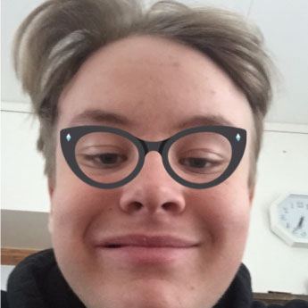

Maksimilian Andersen
About me
Hi my name is Maksimilian Andersen and I'm a 17
year old boy living in Malmö, Sweden. I'm
currently studying at Polhemskolan in Lund and 2017
is my second year out of 3 at this school.
This website is a part of a web development course
im taking at school.
About me
My name is Maksimilian Andersen and I'm a 17 year old boy living in Malmö, Sweden. I'm
currently studying at Polhemskolan in Lund and 2017
is my second year out of 3 at this school.
This website is a part of a web development course
im taking at school.